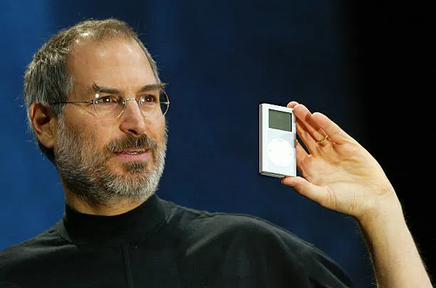

Born in San Francisco
Steve Jobs was born on February 24, 1955, in San Francisco, California, and grew up with a curiosity for creativity, technology, and design that would shape his future.
A Tribute Page
Entrepreneur, innovator, and co-founder of Apple

Steve Jobs was an American entrepreneur and innovator who helped transform personal computers, music players, smartphones, and digital media.
He was known for combining technology with simplicity, design, and an intense focus on the user experience.
Steve Jobs was born on February 24, 1955, in San Francisco, California, and grew up with a curiosity for creativity, technology, and design that would shape his future.
Steve Jobs, Steve Wozniak, and Ronald Wayne founded Apple Computer Company, beginning a journey that would transform the personal computer industry and inspire generations of innovators.
Apple introduced the Macintosh, a revolutionary computer that brought a graphical user interface to the mainstream and made computing more intuitive, visual, and user-friendly.
After leaving Apple, Jobs founded NeXT, a company focused on innovative software and powerful workstations, reflecting his belief that technology should be elegant, capable, and future-ready.
Jobs acquired Pixar, which later became a trailblazing animation studio and changed the way stories were told in cinema, proving his ability to merge creativity with business vision.
Steve Jobs returned to Apple and led a dramatic turnaround, guiding the company through a period of remarkable innovation, product design excellence, and global growth.
Apple introduced the iPod, transforming how people purchased, stored, and listened to music, while also redefining digital entertainment and the future of portable devices.
Apple launched the iPhone, combining a phone, media player, and internet device into one elegant product, ultimately reshaping how the world communicates, works, and connects.
Steve Jobs died on October 5, 2011, leaving behind a legacy of innovation, bold design, and a lasting impact on technology, business, and the way people experience modern life.
He encouraged teams to challenge existing ideas and create products that felt new and useful.
He believed that powerful technology should be understandable, elegant, and easy to use.
His career demonstrated the importance of continuing to work toward a vision despite setbacks.
“The people who are crazy enough to think they can change the world are the ones who do.” — Steve Jobs
You can read more about Steve Jobs and his work at Apple’s Steve Jobs archive .